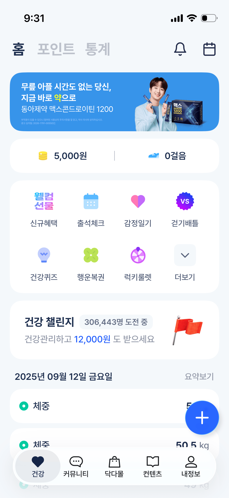

세 번째 실험 · 2026.09.10 · 닥터다이어리
닥터다이어리 메인을
8개 묶음으로 나누면
요소마다 설명과 실제 구현을 붙였어요.
원본을 보지 않은 구현 담당에게 프롬프트와 분리한 에셋만 전달했어요.
원본과 조립 화면
UIbowl · 닥터다이어리 메인 · 같은 표시 폭, 최대390px. 상태바를 제외했어요.

E1 · 상단 보기와 도구
선택된 홈은 진하게, 다른 보기와 도구는 서로 다른 묶음으로 배치했어요.
실제 입력 프롬프트 펼치기
공유·조립 계약 P1과 함께 전달했어요. 하단 좌표·가림은 P2, 토큰은 P3, 메뉴 그림 크기와 행 간격은 P4로 보완했어요.
## E1 · 상단 보기와 도구 y0 h64, 좌우21px. 보기 행은 y9~38에 중심 정렬. 왼쪽 `홈` `포인트` `통계`를 순서대로 배치:22px/700, 선택 홈 주 색, 나머지 #bcc3ce. 사이20px. 오른쪽 bell/calendar 공식SVG, 각각24px, gap22px. 화면 제목 홈의 선택은 글자 굵기/명도로 전달하고 밑줄 없음. 작은 도구의 의미는 알림/달력으로 접근 가능한 이름을 제공한다.
E2 · 광고의 외부 박스
이 광고는 기존 합성 이미지예요. 이미지 내부가 아닌 외부 크기·비율·여백을 구현한 표본이에요.
실제 입력 프롬프트 펼치기
공유·조립 계약 P1과 함께 전달했어요. 하단 좌표·가림은 P2, 토큰은 P3, 메뉴 그림 크기와 행 간격은 P4로 보완했어요.
## E2 · 광고 크리에이티브 y64 h100, x17 w356. assets/banner.png를 가로폭100%로 그대로 표시한다(원본1029×288). 반경22px, object-fit:contain. 기존 광고 카피와 인물/제품은 하나의 합성 광고 원본이다. 임의 재작성/의약효과 추가/작은 광고 글자 HTML 재현 없음. 이 에셋 사용은 사진 복원 평가와 UI 구성 평가를 구별해 기록한다.
E3 · 포인트와 걸음 수
두 요약은 동일 폭이에요. 원본 가운데 세로선은 기존 바 금지 기준에 따라 생략했어요.
실제 입력 프롬프트 펼치기
공유·조립 계약 P1과 함께 전달했어요. 하단 좌표·가림은 P2, 토큰은 P3, 메뉴 그림 크기와 행 간격은 P4로 보완했어요.
## E3 · 포인트와 걸음 요약 y176 h58, x17 w356, 흰 capsule 반경24px. 두 동일 폭 열에 아이콘+숫자를 가로 중앙 배치. assets/coin.png 약18×18, `5,000원`16px/700; assets/shoe.png 약20×16, `0걸음`16px/700. 각 아이콘과글자10px. 수직중앙. 원본 중앙의 세로 구분선은 사용자 바 금지 기준 때문에 생략한다. 두 정보 자체를 하나의 문자열로 합치지 않는다.
E4 · 8개 바로가기
그림 7개는 원본에서 분리하고, 더보기와 모든 라벨·격자·패널은 코드로 만들었어요.
실제 입력 프롬프트 펼치기
공유·조립 계약 P1과 함께 전달했어요. 하단 좌표·가림은 P2, 토큰은 P3, 메뉴 그림 크기와 행 간격은 P4로 보완했어요.
## E4 · 8개 바로가기 y247 h192, x17 w356, 흰 표면22px. 4열×2행. 좌우18px, 위18px 아래18px, 행 높이74px와 행 간격8px로 합계18+74+8+74+18=192. 각 셀 그림36×36 contain, 그림 아래10px, 라벨20px lineheight, 셀 하단8px 여유. 중앙정렬. 첫줄 `신규혜택` welcome.png / `출석체크` attendance.png / `감정일기` emotion.png / `걷기배틀` battle.png. 둘째줄 `건강퀴즈` quiz.png / `행운복권` lottery.png / `럭키룰렛` roulette.png / `더보기` chevron-down.svg. 더보기는36px 옅은 청회색 반경8px 면 위18px 진한 chevron. 다른7개는 고유 브랜드 삽화 그대로. 라벨은14px이며 welcome 그림에 포함된 '웰컴 선물'은 브랜드 그림이지 라벨 대체가 아니다.320에서4열을 유지하되 셀 최소너비0, 필요시 라벨 줄바꿈에 따라 패널 자연높이 증가.
E5 · 건강 챌린지
제목·참가 수·보상과 오른쪽 깃발의 관계를 옮겼어요. HTML 글자14px 하한에 따라 높이가 조금 늘었어요.
실제 입력 프롬프트 펼치기
공유·조립 계약 P1과 함께 전달했어요. 하단 좌표·가림은 P2, 토큰은 P3, 메뉴 그림 크기와 행 간격은 P4로 보완했어요.
## E5 · 건강 챌린지 y451 h100, x17 w356. 흰22px 표면. 내부좌우25px, 상하24px. 오른쪽 flag.png 55×60, 왼쪽 정보와 경쟁하지 않도록 오른쪽 공간62px 예약. 첫 행 `건강 챌린지`18px/700 다음 gap8px 뒤 옅은 면의 작은 pill `306,443명 도전 중`14px/600 보조색, pill좌우8px 높이26px. 둘째행 margin-top8px, `건강관리하고 ` 보조14px + `12,000원` 파랑 #2967ff/500 + ` 도 받으세요` 보조14px. 원본 한 줄이지만14px 하한으로 공간 부족시 자연 줄바꿈을 허용하며 숨김 금지.390에서 첫행 정보+pill이 flag와 물리적으로 겹치면 badge의 공간은 첫행 끝까지 쓰고 flag는 둘째행 우측에 둔다. 고정h100 안에 내용이 실제로 맞는지 박스합 검산하고 모자라면 자연높이를 늘려 다음 요소를 흐름으로 내린다. 이 차이를 알린다.
E6 · 날짜와 기록
날짜 글자의 위치와 행 박스를 구별하고, 숨은 체중 숫자는 추정하지 않았어요. 아래 표본은 기록 자체를 보여주고, 가림 관계는 조립에서 비교해요.
실제 입력 프롬프트 펼치기
공유·조립 계약 P1과 함께 전달했어요. 하단 좌표·가림은 P2, 토큰은 P3, 메뉴 그림 크기와 행 간격은 P4로 보완했어요.
## E6 · 날짜와 체중 기록 챌린지 아래20px. 날짜 행 좌우25px, h30: 왼쪽 `2025년 09월 12일 금요일`16px/700, 오른쪽 `요약보기`14px 보조. 원본 날짜를 오늘로 변경하지 않는다. 아래12px 뒤 흰 기록 행, 좌우17px, 반경22px, h58, 행 gap8px. 내부좌우16px. 청록 #00c6a8 원형16px에 흰 구멍5px, gap8px, `체중`16px/600. 오른쪽 첫 행 값은 원본에서 FAB에 가려 선행 `5`만 판독된다. 추가 숫자를 추정하지 말고 `5`만 표현하고 접근성 이름에 값 일부 가림을 기록한다. 둘째 `50.5` 굵은16px + ` kg` 보조, 셋째 `49` + ` kg`. 세번째는 프레임과 하단 탐색에 부분 가림. 원본에 없는 추가 기록은 생성하지 않는다. 데이터의 진위/날짜 정합성은 재현의 검증 대상이 아니다.
E7 · 기록 추가
정적 추가 표시예요. 버튼 모양과 첫 기록을 가리는 위치를 분리해서 확인했어요.
실제 입력 프롬프트 펼치기
공유·조립 계약 P1과 함께 전달했어요. 하단 좌표·가림은 P2, 토큰은 P3, 메뉴 그림 크기와 행 간격은 P4로 보완했어요.
## E7 · 추가 FAB 390 프레임에서 x315 y622,58×58,파랑 #2967ff 원, white plus.svg26px. 현재 기록목록 오른쪽 위에 겹친다. 그림자0 4px 10px rgba(32,48,79,.12)는 원본에 관찰된 떠있는 요소 관계에만 적용. 컨테이너 상대 absolute로 정적 위치를 옮긴 결정이며 실제 앱 fixed 동작을 알아냈다고 주장하지 않는다.320에서는 레코드 첫행 오른쪽 아래 겹침 관계를 유지하도록 기록 영역에 상대 배치한다. 정적 '+' 이미지 이름 `기록 추가`.
E8 · 하단 탐색
5개 목적지의 아이콘·라벨·선택 면을 구현했어요. 캡슐 아래 기록의 일부 가림은 조립에서 확인할 수 있어요.
실제 입력 프롬프트 펼치기
공유·조립 계약 P1과 함께 전달했어요. 하단 좌표·가림은 P2, 토큰은 P3, 메뉴 그림 크기와 행 간격은 P4로 보완했어요.
## E8 · 하단 목적지 390 프레임 x22 y701 w346 h64, 양끝 반원, 거의 흰 #fcfdfe, 얇은 흰 테두리는 capsule 외곽이며 영역 바가 아니다. 넓고 옅은 그림자는 기존 떠 있는 내비게이션에만. 5개 동일 폭 셀, 아이콘22px 위,14px 라벨 아래gap3px. `건강` heart(네이비 채움), `커뮤니티` message-circle, `닥다몰` shopping-bag, `컨텐츠` book-open, `내정보` user-round. 선택 건강은 제한된 셀 폭의 옅은 회청색 pill 면과 굵은 네이비 글자로 표시하며 underline 없음. 다른 글자/아이콘 #191e24. 아이콘은 공식SVG 경로를 사용하고 선택 heart만 fill=currentColor. 내비게이션 아래 기록이 옅게 비치고 일부 가리는 원본의 관계를 재현한다. 실제 blur/opacity와 bottom safe-area 값은 추정이므로 선택값을 CSS변수로 기록한다.320에서는 카드 증가만큼 nav/FAB도 함께 내려 관계를 지킨다. 캡슐 글자14px 하한으로 커뮤니티가 줄바뀌면 nav의 자연높이를 늘려 읽을 수 있게 한다.
이번에도 다른 부분을 짚어주세요
“E8 선택된 건강 영역이 더 넓어야 해”처럼 말씀해주시면, 해당 프롬프트와 구현을 고치고 재사용할 해석 기준도 보완하겠습니다.